# Cargar datos
a <- read_sav(here("datos", "Encuesta Sociedad de Consumo 2023.sav"))
# Función para recodificar variables a 3 categorías
recodificar_likert <- function(datos, vars) {
datos %>%
mutate(across(all_of(vars),
~ case_when(
. %in% c(1, 2) ~ 1, # Desacuerdo
. == 3 ~ 2, # Neutral
. %in% c(4, 5) ~ 3, # Acuerdo
TRUE ~ NA_real_ # Valores perdidos
)))
}
# Crear dataset de trabajo y preparar variables sociodemográficas
datos <- a %>%
mutate(NSE = as_factor(NSE)) %>%
mutate(
edad_cat = case_when(
EDAD < 25 ~ 1,
EDAD >= 25 & EDAD < 35 ~ 2,
EDAD >= 35 & EDAD < 45 ~ 3,
EDAD >= 45 & EDAD < 55 ~ 4,
EDAD >= 55 & EDAD < 65 ~ 5,
EDAD >= 65 ~ 6,
TRUE ~ NA_real_
),
edad_cat = factor(edad_cat,
levels = 1:6,
labels = c("18-24", "25-34", "35-44", "45-54", "55-64", "65+"))
)
# Función para extraer etiquetas de variables
extraer_etiquetas <- function(datos, vars) {
etiquetas <- sapply(vars, function(v) {
# Intentar obtener la etiqueta de la variable
etiqueta <- var_label(datos[[v]])
if (is.null(etiqueta) || all(etiqueta == "")) {
# Si no hay etiqueta, usar el nombre de la variable
return(paste("Variable", v))
} else {
# Limpiar la etiqueta si es necesario
etiqueta <- gsub("\r\n|\n|\r", " ", as.character(etiqueta))
etiqueta <- gsub("\\s+", " ", etiqueta)
return(etiqueta)
}
})
return(etiquetas)
}
# Extraer y revisar etiquetas para cada conjunto de variables
vars_c3 <- paste0("C3_", 1:16)
etiquetas_c3 <- extraer_etiquetas(a, vars_c3)
vars_o1 <- paste0("O1_", 1:10)
etiquetas_o1 <- extraer_etiquetas(a, vars_o1)
vars_o2 <- paste0("O2_", 1:14)
etiquetas_o2 <- extraer_etiquetas(a, vars_o2)
vars_o3 <- paste0("O3_", 1:10)
etiquetas_o3 <- extraer_etiquetas(a, vars_o3)
vars_o4 <- paste0("O4_", 1:12)
etiquetas_o4 <- extraer_etiquetas(a, vars_o4)Introducción
Este documento presenta un análisis de clases latentes (LCA) aplicado a datos de una encuesta sobre sociedad de consumo. El análisis identifica patrones subyacentes de respuesta en diversas baterías de ítems (C3, O1, O2, O3, O4), considerando covariables sociodemográficas como sexo, edad y nivel socioeconómico.
Preparación de datos
Función para análisis de clases latentes
Para evitar redundancias, definimos una función que realizará el análisis de clases latentes para cada conjunto de variables:
realizar_lca <- function(datos, vars, n_clases = 2:6, nombre_conjunto = "Variables") {
# Recodificar variables
datos <- recodificar_likert(datos, vars)
# Construir fórmula
vars_formula <- paste(vars, collapse = ", ")
formula_str <- paste0("cbind(", vars_formula, ") ~ SEXO + edad_cat + NSE")
f_cov <- as.formula(formula_str)
# Ajustar modelos con diferente número de clases
set.seed(123)
modelos_cov <- list()
# Ajustar modelos
for (i in 1:length(n_clases)) {
cat("Ajustando modelo con", n_clases[i], "clases...\n")
modelos_cov[[i]] <- poLCA(f_cov, datos,
nclass = n_clases[i],
maxiter = 1000,
nrep = 5,
verbose = FALSE)
}
# Verificar modelos válidos
modelos_validos <- !sapply(modelos_cov, is.null)
indices_validos <- which(modelos_validos)
# Si no hay modelos válidos, retornar NULL
if (length(indices_validos) == 0) {
return(NULL)
}
# Crear vectores para resultados
clases <- n_clases[indices_validos]
log_likelihood <- numeric(length(indices_validos))
bic_values <- numeric(length(indices_validos))
aic_values <- numeric(length(indices_validos))
entropia_values <- numeric(length(indices_validos))
# Extraer valores de cada modelo válido
for (i in 1:length(indices_validos)) {
idx <- indices_validos[i]
modelo <- modelos_cov[[idx]]
log_likelihood[i] <- modelo$llik
bic_values[i] <- modelo$bic
aic_values[i] <- modelo$aic
entropia_values[i] <- poLCA.entropy(modelo)
}
# Tabla de resultados
resultados <- data.frame(
Clases = clases,
Log_likelihood = log_likelihood,
BIC = bic_values,
AIC = aic_values,
Entropia = entropia_values
)
# Gráficos de criterios de información
p1 <- ggplot(resultados, aes(x = Clases)) +
geom_line(aes(y = BIC, colour = "BIC"), size = 1) +
geom_point(aes(y = BIC, colour = "BIC"), size = 3) +
geom_line(aes(y = AIC, colour = "AIC"), size = 1) +
geom_point(aes(y = AIC, colour = "AIC"), size = 3) +
theme_minimal() +
labs(title = paste("Criterios de información por número de clases -", nombre_conjunto),
y = "Valor",
colour = "Criterio") +
theme(legend.position = "top")
# Gráfico de entropía
p2 <- ggplot(resultados, aes(x = Clases, y = Entropia)) +
geom_line(size = 1, color = "darkgreen") +
geom_point(size = 3, color = "darkgreen") +
theme_minimal() +
labs(title = paste("Entropía por número de clases -", nombre_conjunto),
y = "Entropía") +
theme(legend.position = "none")
# Seleccionar modelo óptimo (basado en BIC)
indice_optimo <- which.min(resultados$BIC)
clase_optima <- clases[indice_optimo]
idx_optimo <- indices_validos[indice_optimo]
modelo_optimo <- modelos_cov[[idx_optimo]]
cat("Modelo óptimo según BIC:", clase_optima, "clases\n")
# Retornar resultados
return(list(
modelos = modelos_cov,
resultados = resultados,
graficos_criterios = list(p1 = p1, p2 = p2),
modelo_optimo = modelo_optimo,
clase_optima = clase_optima,
indice_optimo = indice_optimo
))
}Función para visualizar resultados con etiquetas
visualizar_lca <- function(resultado_lca, vars, etiquetas_vars, nombre_conjunto = "Variables") {
# Extraer modelo óptimo
modelo_optimo <- resultado_lca$modelo_optimo
n_clases <- resultado_lca$clase_optima
# Extraer probabilidades condicionales
probs_clase_cov <- modelo_optimo$probs
# Definir nombres de variables originales
var_originales <- vars
# Usar las etiquetas extraídas para las variables
etiquetas <- setNames(etiquetas_vars, vars)
# Truncar etiquetas demasiado largas para el gráfico
etiquetas_truncadas <- sapply(etiquetas, function(e) {
if(nchar(e) > 50) {
return(paste0(substr(e, 1, 47), "..."))
} else {
return(e)
}
})
etiquetas <- setNames(etiquetas_truncadas, vars)
# Preparar datos para el gráfico
LMmodelo_cov <- data.frame()
# Para cada variable y cada clase
for (i in 1:length(probs_clase_cov)) {
var_nombre <- var_originales[i]
# Obtener las probabilidades para esta variable
probs <- probs_clase_cov[[i]]
for (j in 1:n_clases) {
# Verificar el número de categorías y adaptar el código
if (ncol(probs) == 5) {
# Recodificar de 5 a 3 categorías
value_recoded <- c(
sum(probs[j, 1:2]), # Desacuerdo (1-2)
probs[j, 3], # Neutral (3)
sum(probs[j, 4:5]) # Acuerdo (4-5)
)
# Crear dataframe con 3 filas
temp_df <- data.frame(
item = rep(var_nombre, 3),
state = rep(j, 3),
category = 1:3, # 1=Desacuerdo, 2=Neutral, 3=Acuerdo
value = value_recoded
)
} else {
# Si ya tenemos 3 categorías
temp_df <- data.frame(
item = rep(var_nombre, ncol(probs)),
state = rep(j, ncol(probs)),
category = 1:ncol(probs),
value = probs[j, ]
)
}
LMmodelo_cov <- rbind(LMmodelo_cov, temp_df)
}
}
# Obtener porcentajes de las clases
porcentajes_cov <- round(modelo_optimo$P * 100, 0)
# Formatear los datos
LMmodelo_cov <- LMmodelo_cov %>%
mutate(clase = factor(
paste0("Clase ", state, " (", porcentajes_cov[state], "%)"),
levels = paste0("Clase ", 1:n_clases, " (", porcentajes_cov, "%)")
)) %>%
mutate(category = factor(
ifelse(category == 1, "Desacuerdo",
ifelse(category == 2, "Neutral", "Acuerdo")),
levels = c("Desacuerdo", "Neutral", "Acuerdo")
))
# Gráfico horizontal con barras apiladas
p_probs <- ggplot(LMmodelo_cov, aes(y = factor(item, levels = var_originales, labels = etiquetas[var_originales]),
x = value, fill = category)) +
geom_bar(stat = "identity", position = "stack") +
facet_grid(. ~ clase) + # Clases en columnas
scale_fill_manual(values = c("Desacuerdo" = "#A8D8E8", "Neutral" = "#E8E8A8", "Acuerdo" = "#000000")) +
labs(title = paste("Probabilidades condicionales por clase latente -", nombre_conjunto),
x = "Probabilidad", y = "", fill = "Respuesta") +
theme_minimal() +
theme(
axis.text.y = element_text(size = 8), # Texto más pequeño para las etiquetas largas
strip.text = element_text(size = 11),
legend.position = "top",
panel.grid.major = element_blank()
)
# Extraer coeficientes y errores estándar
coeficientes <- modelo_optimo$coeff
errores_est <- modelo_optimo$coeff.se
# Si no hay coeficientes o hay menos de 2 clases, no generar gráfico de efectos
if (is.null(coeficientes) || n_clases < 2) {
return(list(grafico_probs = p_probs))
}
# Nombres de las clases para las comparaciones
nombres_comparacion <- paste("Log-Odds(Clase", 2:n_clases, "/ Clase 1)")
colnames(coeficientes) <- nombres_comparacion
colnames(errores_est) <- nombres_comparacion
# Convertir matrices a dataframes
df_coef <- as.data.frame(coeficientes) %>%
rownames_to_column(var = "Variable")
df_se <- as.data.frame(errores_est) %>%
rownames_to_column(var = "Variable")
# Unir coeficientes y errores estándar y calcular intervalos de confianza (95%)
z_critico <- qnorm(0.975)
plot_data <- df_coef %>%
pivot_longer(cols = -Variable, names_to = "Comparacion", values_to = "Estimado") %>%
left_join(
df_se %>% pivot_longer(cols = -Variable, names_to = "Comparacion", values_to = "SE"),
by = c("Variable", "Comparacion")
) %>%
filter(!is.na(SE) & is.finite(SE) & SE > 0) %>%
mutate(
CI_lower = Estimado - z_critico * SE,
CI_upper = Estimado + z_critico * SE,
Comparacion = factor(Comparacion, levels = nombres_comparacion),
Variable = fct_rev(factor(Variable))
)
# Gráfico de efectos de covariables
p_covs <- ggplot(plot_data, aes(x = Estimado, y = Variable)) +
geom_vline(xintercept = 0, linetype = "dashed", color = "grey50") +
geom_errorbarh(aes(xmin = CI_lower, xmax = CI_upper), height = 0.2, color = "gray") +
geom_point(aes(color = Comparacion), size = 2.5, alpha = 0.8) +
facet_wrap(~ Comparacion, scales = "free_x", ncol = min(n_clases-1, 3)) +
labs(
title = paste("Efecto de covariables en la pertenencia a clases latentes -", nombre_conjunto),
subtitle = paste("Modelo de", n_clases, "clases | Coeficientes vs Clase 1 | IC 95%"),
x = "Estimado del coeficiente (Log-Odds relativo a Clase 1)",
y = "Covariable / Nivel"
) +
theme_minimal(base_size = 11) +
theme(
legend.position = "none",
axis.text.y = element_text(size = 9),
strip.text = element_text(face = "bold", size=10),
panel.grid.major.y = element_blank(),
panel.spacing = unit(1.5, "lines")
)
return(list(grafico_probs = p_probs, grafico_covs = p_covs))
}Verificación de etiquetas disponibles
# Crear una tabla con las etiquetas extraídas
etiquetas_todas <- bind_rows(
data.frame(Variable = vars_c3, Etiqueta = etiquetas_c3, Batería = "C3"),
data.frame(Variable = vars_o1, Etiqueta = etiquetas_o1, Batería = "O1"),
data.frame(Variable = vars_o2, Etiqueta = etiquetas_o2, Batería = "O2"),
data.frame(Variable = vars_o3, Etiqueta = etiquetas_o3, Batería = "O3"),
data.frame(Variable = vars_o4, Etiqueta = etiquetas_o4, Batería = "O4")
)
# Mostrar las etiquetas
DT::datatable(etiquetas_todas,
filter = 'top',
options = list(pageLength = 10,
autoWidth = TRUE,
columnDefs = list(list(width = '60%', targets = 2))),
caption = "Etiquetas de las variables utilizadas en el análisis")Análisis de clases latentes por baterías de variables
Batería C3: Variables de actitudes hacia el consumo
# Realizar LCA para C3
lca_c3 <- realizar_lca(datos, vars_c3, n_clases = 2:6, nombre_conjunto = "C3")Ajustando modelo con 2 clases...
Ajustando modelo con 3 clases...Ajustando modelo con 4 clases...Ajustando modelo con 5 clases...Ajustando modelo con 6 clases...Modelo óptimo según BIC: 4 clases# Tabla de resultados
kable(lca_c3$resultados, digits = 2, caption = "Comparación de modelos - Batería C3") %>%
kable_styling(bootstrap_options = c("striped", "hover", "condensed"), full_width = FALSE)| Clases | Log_likelihood | BIC | AIC | Entropia |
|---|---|---|---|---|
| 2 | -25070.30 | 50717.18 | 50296.60 | 15.51 |
| 3 | -24521.72 | 49960.04 | 49291.43 | 15.22 |
| 4 | -24294.96 | 49846.57 | 48929.93 | 15.07 |
| 5 | -24144.01 | 49884.70 | 48720.02 | 15.06 |
| 6 | -24069.36 | 50075.44 | 48662.72 | 15.04 |
# Mostrar gráficos de criterios de información
grid.arrange(lca_c3$graficos_criterios$p1, lca_c3$graficos_criterios$p2, ncol = 2)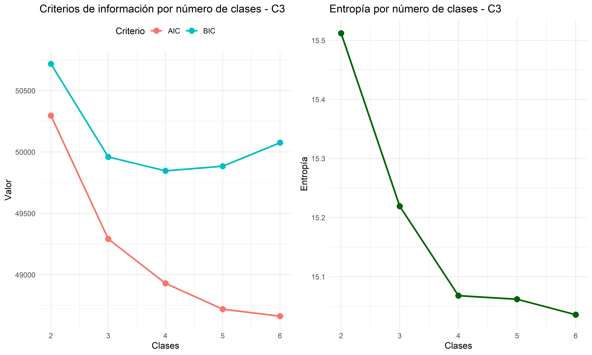
# Visualizar resultado del modelo óptimo según BIC
vis_c3 <- visualizar_lca(lca_c3, vars_c3, etiquetas_c3, nombre_conjunto = "C3")
vis_c3$grafico_probs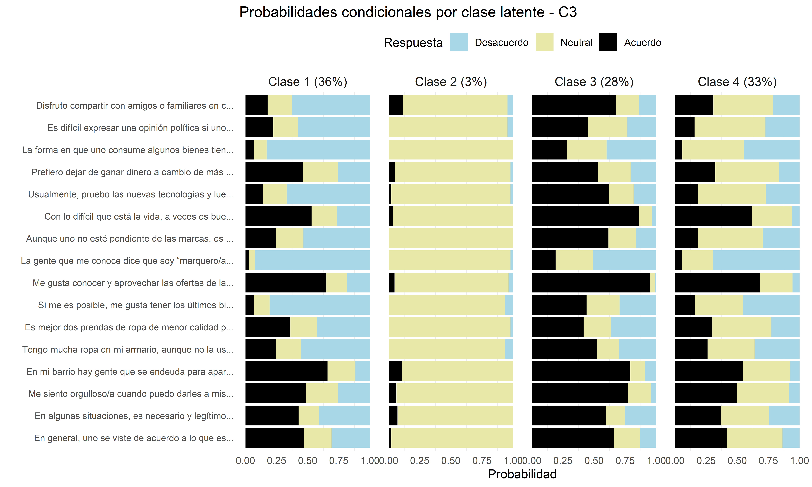
vis_c3$grafico_covs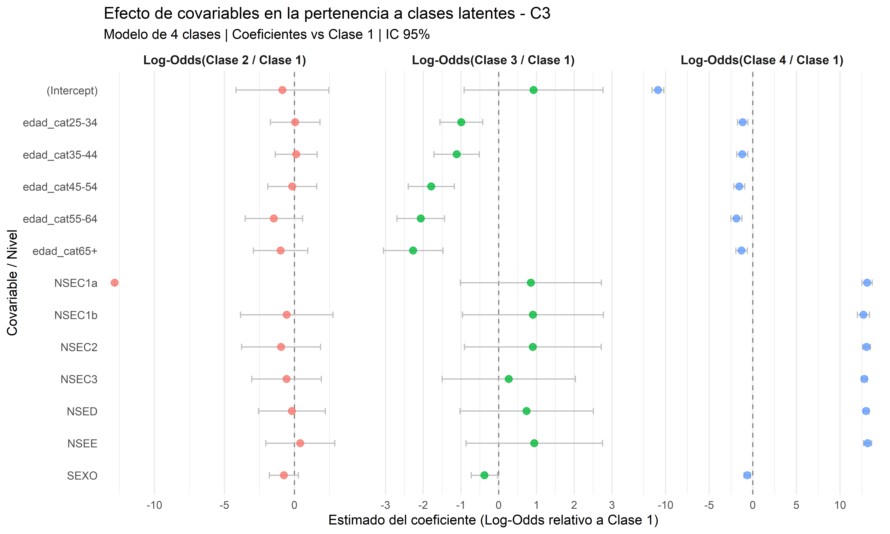
Batería O1: Variables de opiniones generales
# Realizar LCA para O1
lca_o1 <- realizar_lca(datos, vars_o1, n_clases = 2:6, nombre_conjunto = "O1")Ajustando modelo con 2 clases...
Ajustando modelo con 3 clases...Ajustando modelo con 4 clases...Ajustando modelo con 5 clases...Ajustando modelo con 6 clases...Modelo óptimo según BIC: 3 clases# Tabla de resultados
kable(lca_o1$resultados, digits = 2, caption = "Comparación de modelos - Batería O1") %>%
kable_styling(bootstrap_options = c("striped", "hover", "condensed"), full_width = FALSE)| Clases | Log_likelihood | BIC | AIC | Entropia |
|---|---|---|---|---|
| 2 | -15033.63 | 30466.44 | 30175.27 | 9.33 |
| 3 | -14846.33 | 30343.15 | 29868.65 | 9.25 |
| 4 | -14722.86 | 30347.54 | 29689.72 | 9.22 |
| 5 | -14631.79 | 30416.75 | 29575.59 | 9.19 |
| 6 | -15140.00 | 31684.49 | 30660.00 | 9.43 |
# Mostrar gráficos de criterios de información
grid.arrange(lca_o1$graficos_criterios$p1, lca_o1$graficos_criterios$p2, ncol = 2)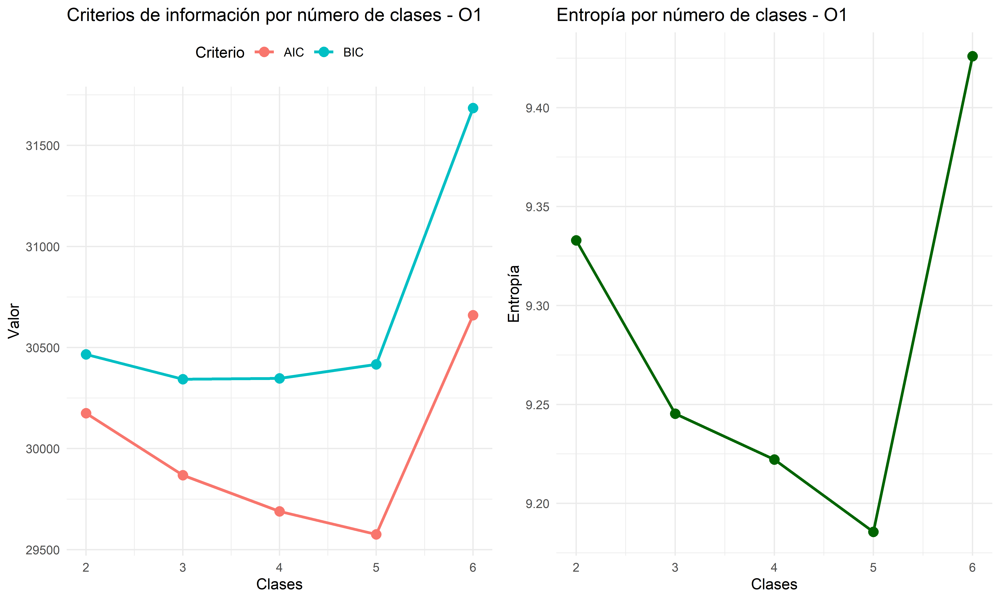
# Visualizar resultado del modelo óptimo según BIC
vis_o1 <- visualizar_lca(lca_o1, vars_o1, etiquetas_o1, nombre_conjunto = "O1")
vis_o1$grafico_probs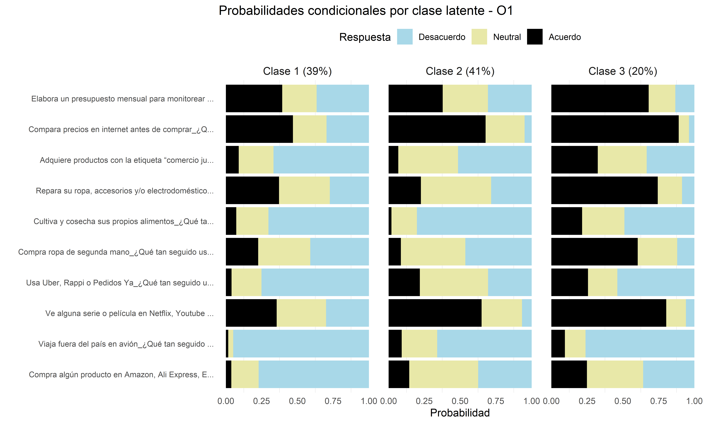
vis_o1$grafico_covs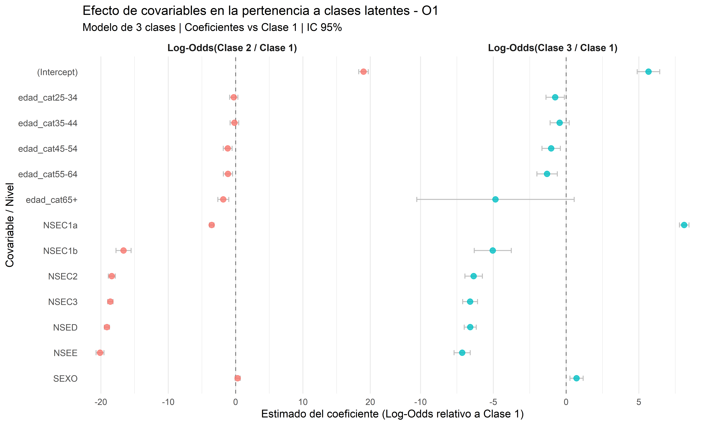
Batería O2: Variables de satisfacción
# Realizar LCA para O2
lca_o2 <- realizar_lca(datos, vars_o2, n_clases = 2:6, nombre_conjunto = "O2")Ajustando modelo con 2 clases...
Ajustando modelo con 3 clases...Ajustando modelo con 4 clases...Ajustando modelo con 5 clases...Ajustando modelo con 6 clases...
Modelo óptimo según BIC: 4 clases# Tabla de resultados
kable(lca_o2$resultados, digits = 2, caption = "Comparación de modelos - Batería O2") %>%
kable_styling(bootstrap_options = c("striped", "hover", "condensed"), full_width = FALSE)| Clases | Log_likelihood | BIC | AIC | Entropia |
|---|---|---|---|---|
| 2 | -19576.63 | 39670.70 | 39293.25 | 12.14 |
| 3 | -19280.71 | 39389.32 | 38785.42 | 11.97 |
| 4 | -19017.10 | 39172.57 | 38342.20 | 11.80 |
| 5 | -18894.80 | 39238.44 | 38181.60 | 11.76 |
| 6 | -20610.53 | 42980.37 | 41697.07 | 12.79 |
# Mostrar gráficos de criterios de información
grid.arrange(lca_o2$graficos_criterios$p1, lca_o2$graficos_criterios$p2, ncol = 2)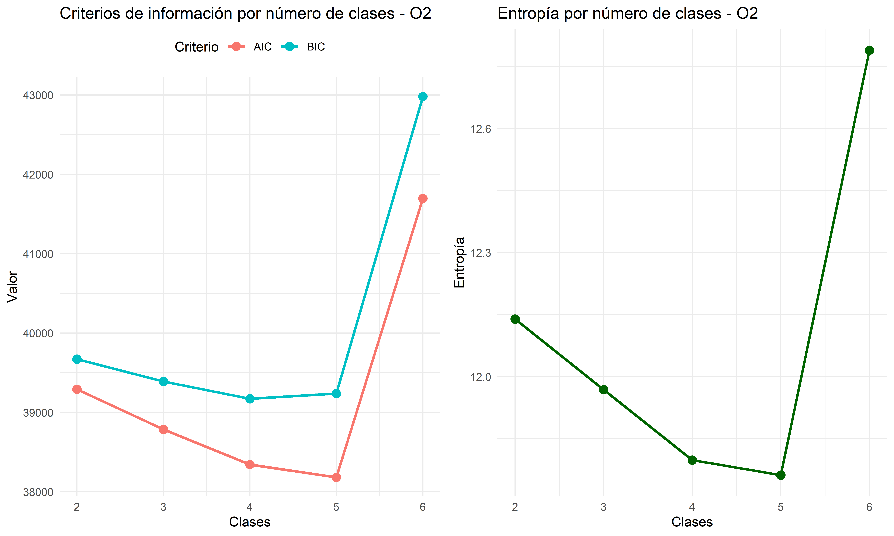
# Visualizar resultado del modelo óptimo según BIC
vis_o2 <- visualizar_lca(lca_o2, vars_o2, etiquetas_o2, nombre_conjunto = "O2")
vis_o2$grafico_probs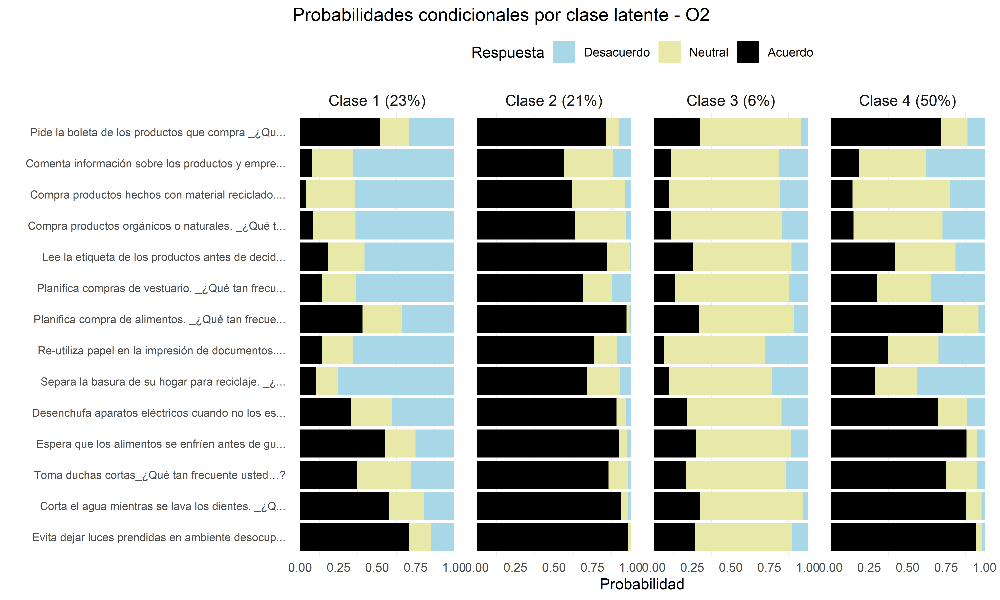
vis_o2$grafico_covs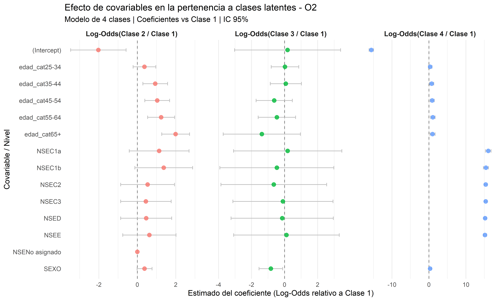
Batería O3: Variables de creencias
# Realizar LCA para O3
lca_o3 <- realizar_lca(datos, vars_o3, n_clases = 2:6, nombre_conjunto = "O3")Ajustando modelo con 2 clases...
Ajustando modelo con 3 clases...Ajustando modelo con 4 clases...Ajustando modelo con 5 clases...Ajustando modelo con 6 clases...
Modelo óptimo según BIC: 4 clases# Tabla de resultados
kable(lca_o3$resultados, digits = 2, caption = "Comparación de modelos - Batería O3") %>%
kable_styling(bootstrap_options = c("striped", "hover", "condensed"), full_width = FALSE)| Clases | Log_likelihood | BIC | AIC | Entropia |
|---|---|---|---|---|
| 2 | -13387.24 | 27173.65 | 26882.48 | 8.30 |
| 3 | -13176.40 | 27003.30 | 26528.80 | 8.18 |
| 4 | -12979.06 | 26859.94 | 26202.12 | 8.08 |
| 5 | -14200.95 | 29555.05 | 28713.90 | 8.82 |
| 6 | -14225.57 | 29855.62 | 28831.13 | 8.82 |
# Mostrar gráficos de criterios de información
grid.arrange(lca_o3$graficos_criterios$p1, lca_o3$graficos_criterios$p2, ncol = 2)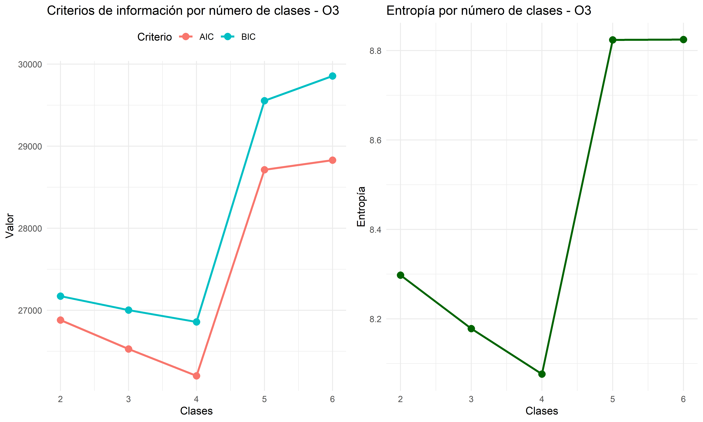
# Visualizar resultado del modelo óptimo según BIC
vis_o3 <- visualizar_lca(lca_o3, vars_o3, etiquetas_o3, nombre_conjunto = "O3")
vis_o3$grafico_probs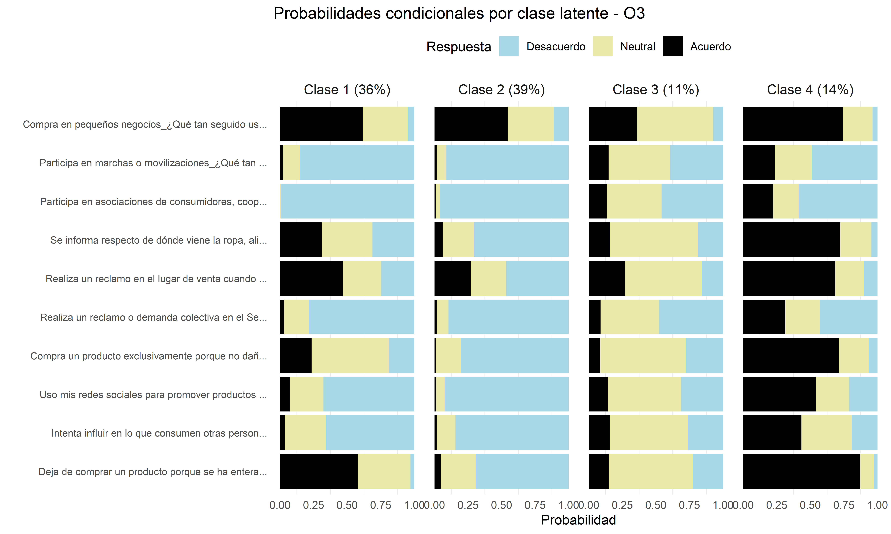
vis_o3$grafico_covs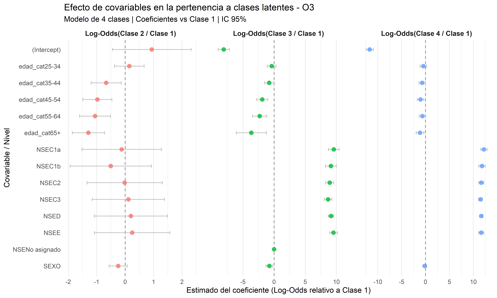
Batería O4: Variables de valores
# Realizar LCA para O4
lca_o4 <- realizar_lca(datos, vars_o4, n_clases = 2:6, nombre_conjunto = "O4")Ajustando modelo con 2 clases...
Ajustando modelo con 3 clases...Ajustando modelo con 4 clases...Ajustando modelo con 5 clases...Ajustando modelo con 6 clases...Modelo óptimo según BIC: 4 clases# Tabla de resultados
kable(lca_o4$resultados, digits = 2, caption = "Comparación de modelos - Batería O4") %>%
kable_styling(bootstrap_options = c("striped", "hover", "condensed"), full_width = FALSE)| Clases | Log_likelihood | BIC | AIC | Entropia |
|---|---|---|---|---|
| 2 | -18519.37 | 37497.05 | 37162.74 | 11.46 |
| 3 | -18029.67 | 36798.55 | 36259.34 | 11.17 |
| 4 | -17855.46 | 36731.02 | 35986.92 | 11.05 |
| 5 | -17826.16 | 36953.32 | 36004.32 | 11.06 |
| 6 | -19084.49 | 39750.88 | 38596.98 | 11.85 |
# Mostrar gráficos de criterios de información
grid.arrange(lca_o4$graficos_criterios$p1, lca_o4$graficos_criterios$p2, ncol = 2)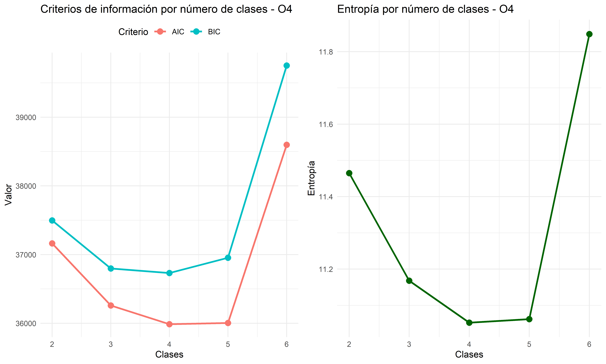
# Visualizar resultado del modelo óptimo según BIC
vis_o4 <- visualizar_lca(lca_o4, vars_o4, etiquetas_o4, nombre_conjunto = "O4")
vis_o4$grafico_probs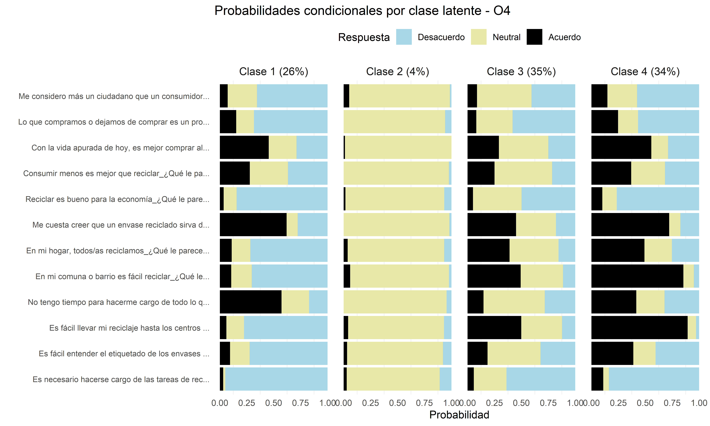
vis_o4$grafico_covs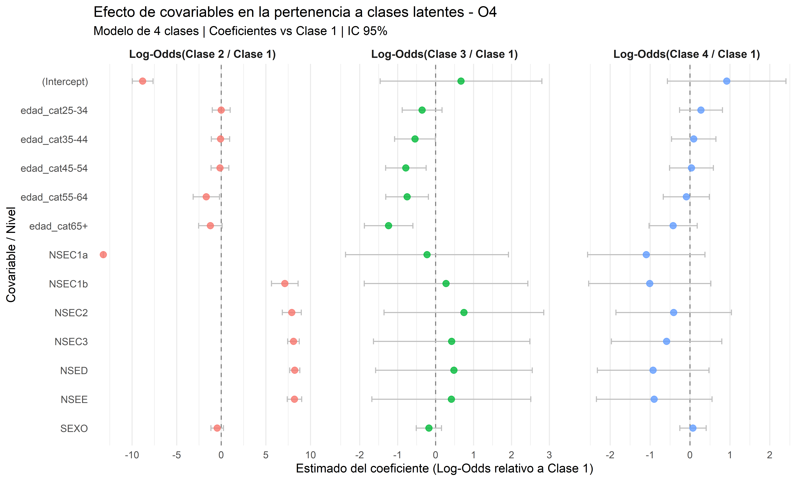
Resumen de resultados
# Crear dataframe de resumen
resumen <- data.frame(
Batería = c("C3", "O1", "O2", "O3", "O4"),
Variables = c(
paste0("C3_1 a C3_16 (", length(vars_c3), " vars)"),
paste0("O1_1 a O1_10 (", length(vars_o1), " vars)"),
paste0("O2_1 a O2_14 (", length(vars_o2), " vars)"),
paste0("O3_1 a O3_10 (", length(vars_o3), " vars)"),
paste0("O4_1 a O4_12 (", length(vars_o4), " vars)")
),
Clases_Óptimas = c(
lca_c3$clase_optima,
lca_o1$clase_optima,
lca_o2$clase_optima,
lca_o3$clase_optima,
lca_o4$clase_optima
),
BIC = c(
min(lca_c3$resultados$BIC),
min(lca_o1$resultados$BIC),
min(lca_o2$resultados$BIC),
min(lca_o3$resultados$BIC),
min(lca_o4$resultados$BIC)
),
Entropía = c(
lca_c3$resultados$Entropia[which.min(lca_c3$resultados$BIC)],
lca_o1$resultados$Entropia[which.min(lca_o1$resultados$BIC)],
lca_o2$resultados$Entropia[which.min(lca_o2$resultados$BIC)],
lca_o3$resultados$Entropia[which.min(lca_o3$resultados$BIC)],
lca_o4$resultados$Entropia[which.min(lca_o4$resultados$BIC)]
)
)
# Mostrar tabla de resumen
kable(resumen, digits = 2, caption = "Resumen de resultados por batería de variables") %>%
kable_styling(bootstrap_options = c("striped", "hover"), full_width = FALSE)| Batería | Variables | Clases_Óptimas | BIC | Entropía |
|---|---|---|---|---|
| C3 | C3_1 a C3_16 (16 vars) | 4 | 49846.57 | 15.07 |
| O1 | O1_1 a O1_10 (10 vars) | 3 | 30343.15 | 9.25 |
| O2 | O2_1 a O2_14 (14 vars) | 4 | 39172.57 | 11.80 |
| O3 | O3_1 a O3_10 (10 vars) | 4 | 26859.94 | 8.08 |
| O4 | O4_1 a O4_12 (12 vars) | 4 | 36731.02 | 11.05 |
Distribución de clases por batería
# Función para obtener distribución de clases
obtener_distribucion <- function(resultado_lca, datos, vars, nombre_conjunto) {
# Extraer modelo óptimo
modelo_optimo <- resultado_lca$modelo_optimo
n_clases <- resultado_lca$clase_optima
# Obtener probabilidades posteriores
posterior_probs <- modelo_optimo$posterior
# Asignar cada observación a la clase con mayor probabilidad posterior
clase_asignada <- apply(posterior_probs, 1, which.max)
# Preparar datos para conteo
indices_validos <- which(!is.na(rowSums(as.matrix(datos[, vars]))))
# Contar observaciones por clase
tabla <- table(clase_asignada)
porcentajes <- round(prop.table(tabla) * 100, 1)
# Crear dataframe
df <- data.frame(
Conjunto = nombre_conjunto,
Clase = paste("Clase", names(tabla)),
Observaciones = as.numeric(tabla),
Porcentaje = porcentajes
)
return(df)
}
# Obtener distribuciones
dist_c3 <- obtener_distribucion(lca_c3, datos, vars_c3, "C3")
dist_o1 <- obtener_distribucion(lca_o1, datos, vars_o1, "O1")
dist_o2 <- obtener_distribucion(lca_o2, datos, vars_o2, "O2")
dist_o3 <- obtener_distribucion(lca_o3, datos, vars_o3, "O3")
dist_o4 <- obtener_distribucion(lca_o4, datos, vars_o4, "O4")
# Combinar en un solo dataframe
distribuciones <- bind_rows(dist_c3, dist_o1, dist_o2, dist_o3, dist_o4)
# Mostrar tabla
distribuciones %>%
DT::datatable(
caption = "Distribución de observaciones por clase latente",
options = list(pageLength = 20, dom = 'tip'),
rownames = FALSE
)Citation
BibTeX citation:
@misc{cantillan2025,
author = {Cantillan, Roberto},
title = {Análisis de {Clases} {Latentes} Baterias Encuesta de Consumo
Crítico},
date = {2025},
langid = {en},
abstract = {Este documento presenta un análisis de clases latentes
aplicado a datos de una encuesta sobre sociedad de consumo. Mediante
la identificación de patrones subyacentes de respuesta, el análisis
examina cinco baterías de variables (C3, O1, O2, O3, O4)
relacionadas con actitudes, opiniones, satisfacción, creencias y
valores. La metodología incluye la recodificación de escalas Likert
a tres categorías (desacuerdo, neutral, acuerdo), el ajuste de
modelos con diferente número de clases, y la evaluación de criterios
de información para seleccionar el modelo óptimo. El análisis
también explora la influencia de covariables sociodemográficas
(sexo, edad y nivel socioeconómico) en la pertenencia a cada clase
latente.}
}
For attribution, please cite this work as:
Cantillan, Roberto. 2025. “Análisis de Clases Latentes Baterias
Encuesta de Consumo Crítico.” Documentos de Trabajo.